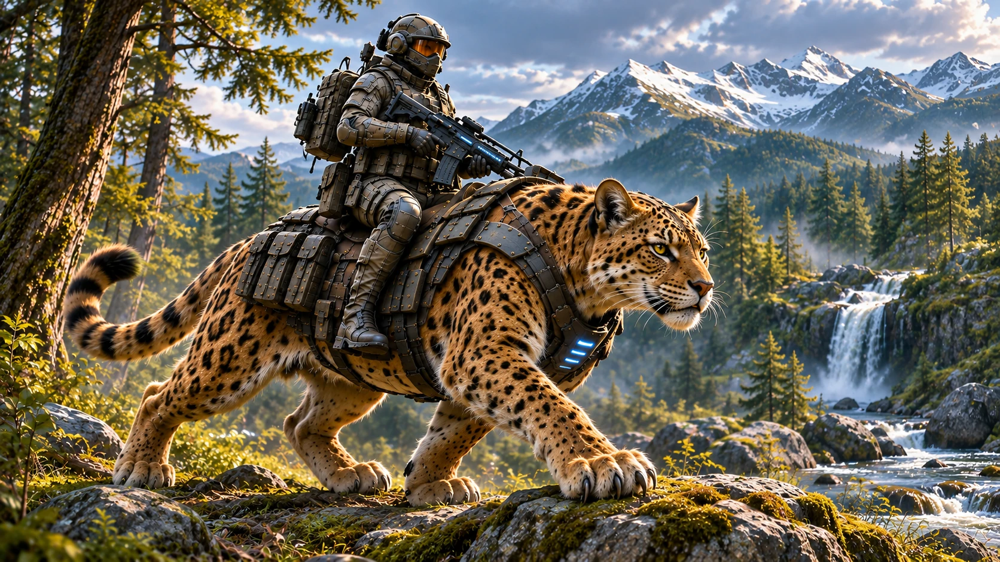

Розвідка та спостереження
Пересування складною місцевістю, спостереження за маршрутами й виявлення загроз завдяки поєднанню людської оцінки та чуттів тварини.
ДОВІДНИК ВСЕСВІТУ · ВІЙСЬКОВІ ПІДРОЗДІЛИ
Людина і велика бойова кішка — одна бойова одиниця

Мобільні бійці, які поєднують людське стратегічне мислення з природними можливостями великої кішки.
ПРИНЦИП ДІЇ
Перелом на рідному Плані настав тоді, коли люди перестали сприймати велику кішку лише як верхову тварину й навчилися діяти з нею як єдине ціле.
Кішка забезпечує гострий слух і нюх, швидку реакцію, маневреність та здатність рухатися складною місцевістю. Людина додає стратегічне мислення, вибір цілі, сучасну зброю й оцінку загальної ситуації. Вершник і тварина навчаються розуміти рухи одне одного та діяти узгоджено, не втрачаючи власних природних переваг.
БОЙОВА КІШКА
Велика кішка — не транспорт і не броньована платформа. Вона залишається самостійною твариною зі своїми інстинктами, реакціями та бойовими можливостями. Її сила й маса допомагають у ближньому зіткненні, а гнучкий корпус, потужні кінцівки та хвіст дають змогу різко змінювати напрямок і долати нерівний рельєф.


СПОРЯДЖЕННЯ
Броня великих кішок модульна й призначена насамперед для зменшення ризику смертельних поранень. Вона прикриває важливі ділянки корпусу, але не повинна стискати грудну клітку, обмежувати роботу плечей, згинання спини або рух кінцівок.
Низьке бойове сідло та система кріплень утримують вершника й спорядження під час прискорення, стрибків і різких поворотів. Додаткові вантажні модулі встановлюють лише тоді, коли вони не порушують рівновагу тварини.

ЗАВДАННЯ ПІДРОЗДІЛІВ
Пересування складною місцевістю, спостереження за маршрутами й виявлення загроз завдяки поєднанню людської оцінки та чуттів тварини.
Короткі мобільні виходи, раптова поява на потрібній ділянці та швидка зміна напрямку дій.
Локальні атаки там, де швидкість, маневреність і сила бойової пари дають перевагу.
Супровід груп, допомога основним силам і підтримка під час евакуаційних операцій.
Вершники не замінюють піхоту й не призначені для тривалого утримання позицій. Їхня перевага — мобільність і можливість швидко вплинути на перебіг бою, після чого відійти або змінити напрямок.
ПІДГОТОВКА
Підготовка вершника не зводиться до вміння триматися в сідлі чи користуватися зброєю. Людина має навчитися читати поведінку кішки, розуміти її реакції та не вимагати від неї рухів, які суперечать її природній анатомії.
Кішка, своєю чергою, звикає до вершника, його голосу, рухів і спорядження. Злагодженість формується поступово — через спільні тренування, повторення ситуацій і взаємну довіру. Саме цей досвід перетворює двох різних учасників на єдину бойову пару.